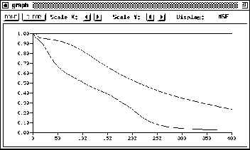

Graph is a tool to visualize the error development of a net. The
program is started by clicking the button in the
manager panel or by typing Alt-g in any SNNS window.
Figure  shows the window of the graph tool.
shows the window of the graph tool.

Graph is only active after calling it. This means, the development of
the error is only drawn as long as the window is not closed. The
advantage of this implementation is, that the simulator is not slowed
down as long as graph is closed . If the window is iconified, graph remains
active.
. If the window is iconified, graph remains
active.
The error curve of the net is plotted until the net is initialized or
a new net is loaded, in which case the cycle counter is reset to
zero. The window, however, is not cleared until the clear button is
pressed. This opens the possibility to compare several error curves in
a single display (see also figure  ). The maximum number of
curves, which can be displayed simultaneously is 25. If a curve is
tried to be drawn, the confirmer appears with an error message.
). The maximum number of
curves, which can be displayed simultaneously is 25. If a curve is
tried to be drawn, the confirmer appears with an error message.
When the curve reaches the right end of the window, an automatic rescale of the x-axis is performed. This way, the whole curve always remains visible.
In the top region of the graph window, seven buttons for handling the display are located:
: Clears the screen of the graph window and sets the cycle counter to zero.
: Closes the graph window and resets the cycle counter.
For both the x-- and y--axis the following two buttons are available:
xgui_figs/xgui_button_prev.ps: Reduce scale in one direction.
xgui_figs/xgui_button_next.ps: Enlarge scale in one direction.
: Opens a popup menu to select the value to be plotted. Choices are , , and , the SSE divided by the number of output units.
While the simulator is working all buttons are blocked.
The graph window can be resized by the mouse like every X-window. Changing the size of the window does not change the size of the scale.
When validation is turned on in the control panel two curves will be drawn simultaneously in the graph window, one for the training set and one for the validation set. On color terminals the validation error will be plotted as solid red line, on B/W terminals as dashed black line.